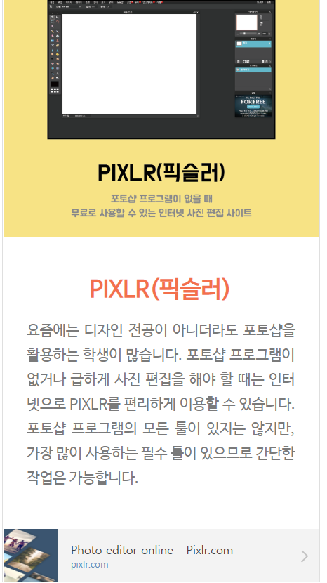

/<!DOCTYPE html>
<html>
<head>
<meta  charset = " UTF-8 " >
<title>추천사이트2 픽슬러</title>
<style>
	body {background-color: red ; }
	h3 {font-size: 40px;
		text-align: center;
		color : blue; }
	hr { border: 9px solid black; }
	p {color:blue;
		font-size: 30px;}
	span {font-size: 30px;}
</style>
</head>
<body>
	<h3>픽슬러</h3>
	<hr>
	<span>요즘에는 디자인 전공이 아니더라도 포토샵을 활용하는 학생이 많습니다. 포토샵 프로그램이 없거나 급하게 사진 편집을 해야 할 때는 인터넷으로 PIXLR를 편리하게 이용할 수 있습니다. 포토샵 프로그램의 모든 툴이 있지는 않지만, 가장 많이 사용하는 필수 툴이 있으므로 간단한 작업은 가능합니다.</span><br><br><p>

<ul>
<li><a href="https://pixlr.com/">픽슬러</a></li>

</body>
</html>